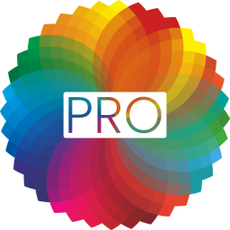
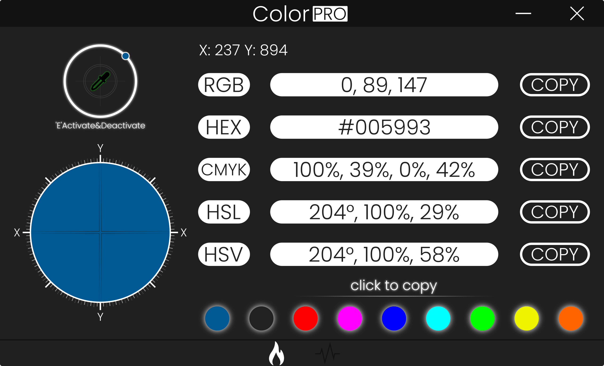

Plain&Simple Color Picker

Features
ColorPRO is a color picking software for Windows that captures colors of pixels on a screen and displays the color in different color code formats: RGB, HEX, CMYK, HSL and HSV.
ColorPRO v.1.0